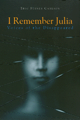

A powerful and moving remembrance of a young doctor who was disappeared during the Argentine "Dirty War"
A powerful and moving remembrance of a young doctor who was disappeared during the Argentine "Dirty War"


 A powerful and moving remembrance of a young doctor who was disappeared during the Argentine "Dirty War"
A powerful and moving remembrance of a young doctor who was disappeared during the Argentine "Dirty War"

|  |
I Remember JuliaVoices of the DisappearedEric Stener Carlsonpaper EAN: 978-1-56639-437-6 (ISBN: 1-56639-437-6) |
In 1977 "Julia" became one of the 30,000 victims of Argentina's most recent military dictatorship. Julia was a young physician and mother-to-be kidnapped from a medical clinic and found years later in a clandestine grave along with 334 other corpses. Who were these thousands of victims? Who was Julia?
By reconstructing the life of one victim, Eric Stener Carlson gives voice to the thousands of citizens who were "disappeared." Ironically, in doing so, he must use the pseudonym "Julia" for this young woman to protect the people she left behind. The pieces of Julia's story come together through the emotional and poignant memories of those who knew her--childhood friends and family, classmates and colleagues, an ex-lover, and fellow prisoners whose lives intersected with hers in the government torture centers. Interspersed between the personal testimonies are the voices of others who give her story a political and social context. They include a military general, a priest, a politician, a human rights activist, and a prosecuting attorney in the war crimes tribunal.
Carlson creates a personalized account that addresses not only the atrocities of Argentina's Dirty War, but human rights transgressions throughout Latin America and the world. It is impossible to read this story and not come away with a profound sense of human tragedy and personal suffering associated with repressive government policies everywhere.
Excerpt available at www.temple.edu/tempress
Acknowledgments
Author's Introduction
1. The Cemetery: Voice 1, Emilio Fermín Mignone
2. Catalina: Voice 2, Father Luis Angel Farinello
3. Graciela: Voice 3, Dr. Ester Saavedra
4. Manuel: Voice 4, Uki Goñi
5. The Clinic: Voice 5, María Adela Gard de Antokoletz
6. Laura: Voice 6, Adolfo Pérez Esquivel
7. Luciano: Voice 7, María Isabel Chorobik de Miriani
8. Victoria: Voice 8, Dr. Jorge Reinaldo Vanossi
9. Francisco: Voice 9, Luis Brandoni
10. "El Angel": Voice 10, General Herberto Justo Auel
11. Ana María: Voice 11, Dr Luis Gabriel Moreno Ocampo
12. Silvina: Voice 12, Eduardo Rabossi
Author's Epilogue
Index
 | Eric Stener Carlson is a Fellow of Physicians for Human Rights, working with the War Crimes Tribunal for the Former Yugoslavia in The Hague. He previously spent two years in Buenos Aires, Argentina, as a Fulbright Scholar conducting research and interviews for this book. |
Latin American/Caribbean Studies
Philosophy and Ethics
© 2015 Temple University. All Rights Reserved. This page: http://www.temple.edu/tempress/titles/1250_reg.html.